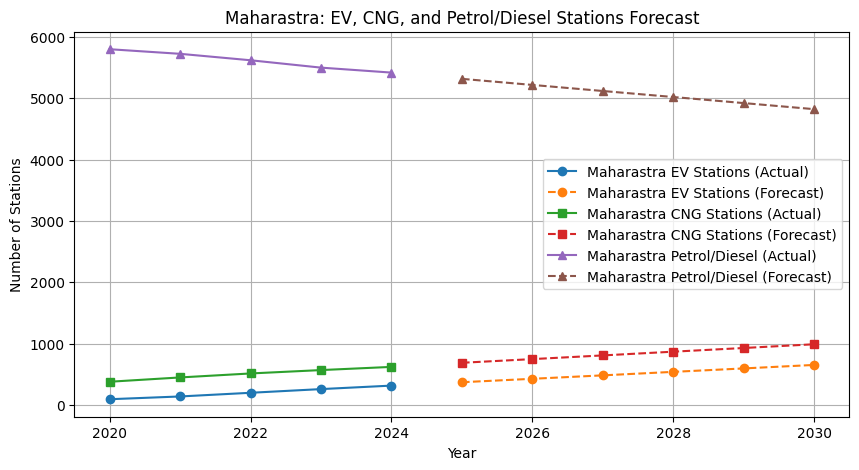
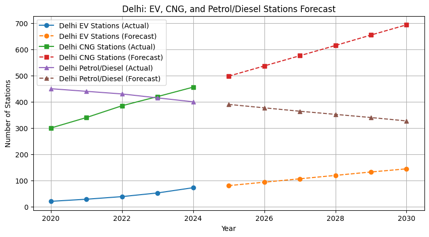
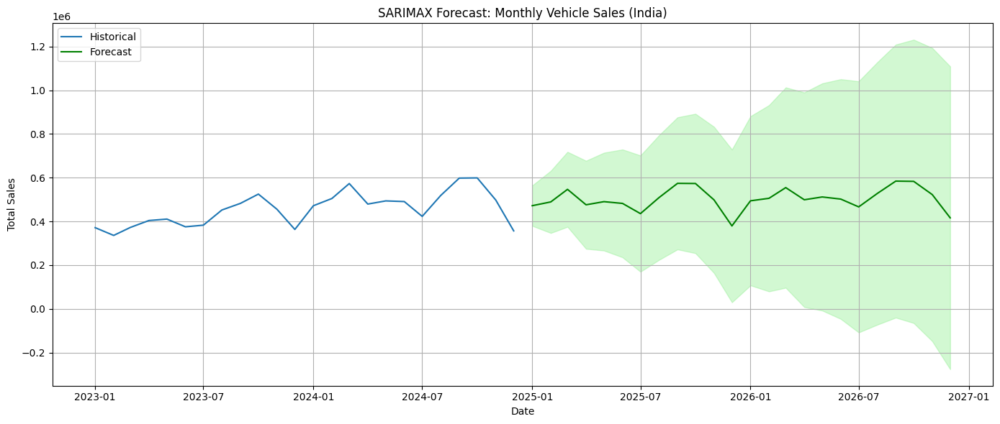
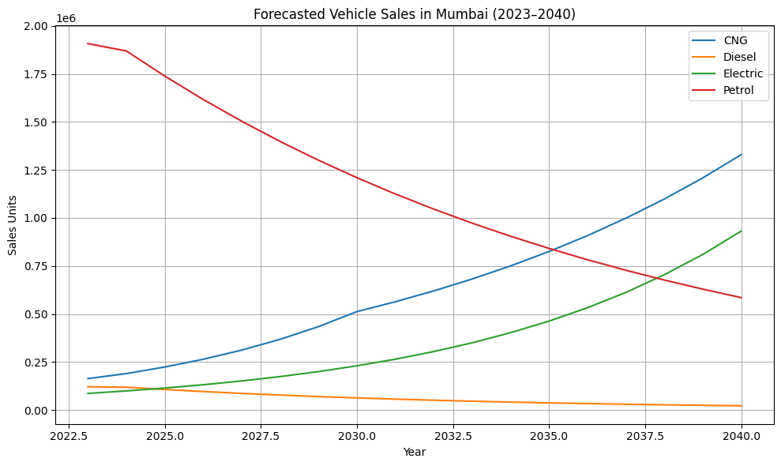
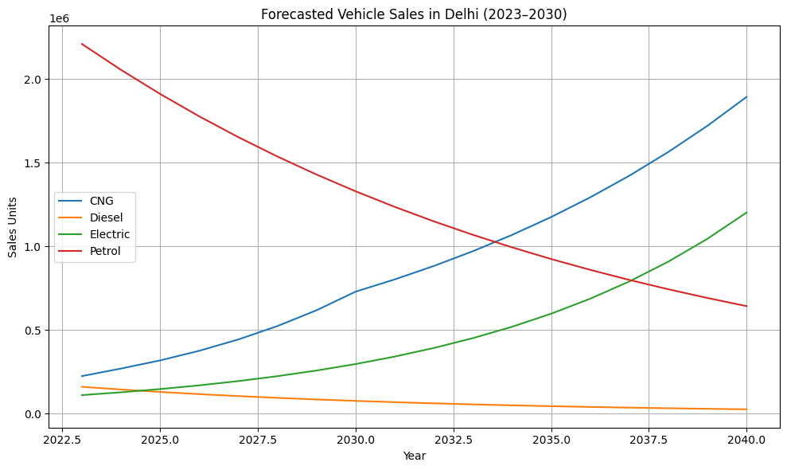

This project provides a comprehensive analysis and forecasting model for the Indian automotive market, specifically focusing on fuel type transitions—Electric Vehicles (EV), CNG, Petrol, and Diesel. Using historical data and ML models, it predicts future trends and policy impact for stakeholders.
Tools Used: Python, Excel
My Role: Data Analyst (Machine Learning)
The goal was to create a robust forecasting model for fuel-type-based vehicle sales up to 2030 and analyze regional adoption in Maharashtra and Delhi, in response to policy shifts, infrastructure growth, and evolving user preferences.
Maharashtra: EV, CNG, and Petrol/Diesel Stations Forecast: This line chart shows the actual historical data and forecasted future growth for EV charging stations, CNG stations, and Petrol/Diesel stations in Maharashtra. It illustrates the predicted infrastructure development.
Delhi: EV, CNG, and Petrol/Diesel Stations Forecast: This line chart displays the actual and forecasted growth of various fuel stations in Delhi. It helps in comparing infrastructure development across different states.
Overall Vehicle Sales Trends: A chart showing the aggregated vehicle sales trends over time. This would include total sales volume and growth rates.
Predicted Sales Crossover Year(Mumbai): A line chart that specifically highlights the forecasted year(s) when sales of EVs or CNG vehicles are projected to overtake traditional petrol/diesel vehicle sales in Mumbai.
Predicted Sales Crossover Year(Delhi): A line chart that specifically highlights the forecasted year(s) when sales of EVs or CNG vehicles are projected to overtake traditional petrol/diesel vehicle sales in Delhi.
| Project Title | Trends Analysis and Sales Prediction – Automotive |
| Domain | Automotive |
| Tools Used | Python, Tableau/Power BI, Excel |
| Role | Data Analyst (ML + Insights) |
| Objective | Forecast sales across fuel types and assess policy impact |
| Key Metrics | Sales trends, Fuel infra growth, Market share shifts |
| Approach | Data Integration, ETL, EDA, ML Forecasting, Dashboards |
| Insights | EV/CNG shift, policy influence, regional predictions |
| Recommendations | Govt, OEMs, Consumers: align for green transition |
| Learning Outcomes | ML + Forecasting + Policy Analysis |